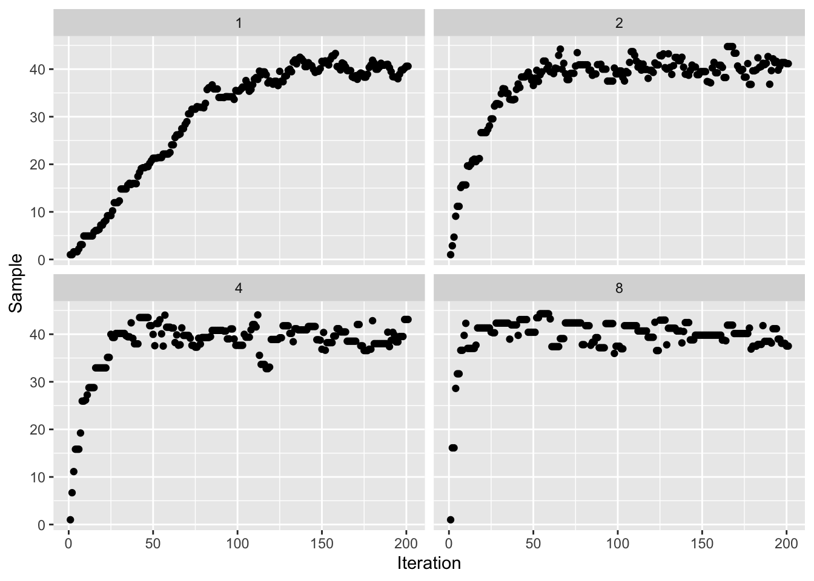

Can you Monte Carlo your way to a Markov Chain with known stationary distribution?
Markov Chain Monte Carlo allows us to sample from the probability distribution \(\pi(x)\), which may not have been possible before.
Warning
If you can sample exactly from the distribution, you do not need to use Markov Chain Monte Carlo. For example, if you want to sample from a normal distribution, just sample from the normal distribution.
Markov Chains
Discrete Markov Chains
A discrete Markov Chain is a sequence of random variables that satisfy the Markov property. That is, the next random variable in the sequence only depends upon the current state, \[
X_{n+1} \sim P(\cdot | X_n)
\] where \(X_n\) is the \(n\)-th random variable in the sequence and \(P(\cdot | X_n)\) is the proposal distribution.
Detailed Balance
\[
\pi(x)p(x'|x) = \pi(x')p(x|x')
\] where \(\pi(x)\) is the stationary distribution of the Markov Chain and \(p(x|x')\) is the transition probability from \(x'\) to \(x\). The flow out of \(x\) into \(x'\) is balanced by the flow from \(x'\) into \(x\).
Markov Chain Monte Carlo
It would be extremely helpful if we could easily construct the transition probabilities of a Markov Chain with a known stationary distribution. If this was the case then we could generate a large number of samples from our Markov Chain and the stationary distribution of these samples will be samples from our distribution of interest. This is the main premise behind Markov Chain Monte Carlo, where we use a Monte Carlo approach to alter a simpler Markov Chain into one with a known stationary distribution.
To construct the transition probabilities we decompose \(p(x'|x)\) into an accept-reject step. Namely, \[
p(x'|x) = q(x'|x)A(x', x),
\] where \(q(x|x')\) is the probability density of the proposal distribution and \(A(x', x)\) is the acceptance criteria (note that it is both a function of the current state and the updated state). The accept-reject step consists of proposing a new sample, \[
x' \sim Q(\cdot|x)
\] where \(Q(\cdot|x)\) is the proposal distribution, followed by checking if we accept the new sample. We can now ask what acceptance criteria will ensure that the Markov Chain satisfies detailed balance with a stationary distribution \(\pi(x)\).
Metropolis-Hastings Acceptance Criteria
\[
A(x', x) = \min \left(1, \frac{\pi(x')q(x| x')}{\pi(x)q(x' | x)}\right)
\] where \(q(x'|x)\) is probability density of the proposal distribution of \(x'\) given a known \(x\).
The Metropolis-Hastings Algorithm is a way to construct a Markov Chain with known stationary distribution. This algorithm breaks up the sampling procedure into two steps, the proposal step and the acceptance step. By using an acceptance step that satisfies detailed balance, we can ensure that the stationary distribution of the algorithm is the probability distribution we want to sample from. This is beneficial when you do not have another way to sample from the required distribution.
The full algorithm for Markov Chain Monte Carlo is:
Start with an initial sample \(x\).
Generate a proposed sample \(x' \sim Q(\cdot | x)\)
Accept sample with probability \(A(x', x)\).
Repeat steps 2-4 as desired.
This will generate a sequence of samples that have the stationary distribution \(\pi(x)\).
Example
Here we provide a simple implementation of Markov Chain Monte Carlo. Consider we want to sample from a normal distribution with mean \(40\) and standard deviation of \(2\). We can obviously sample directly from that distribution using known techniques, but lets construct a Markov Chain such that \[
\pi(x) = \mathcal{N}(x|\mu = 40, \sigma = 2).
\]
There are hyperparmeters within the above algorithm that should be understood, the most important of which are associated with the proposal distribution. By calibrating the proposal distribution it is possible to end up with fast (or slower) convergence to the stationary distribution.

In our simple example the only hyperparameter within the proposal distribution is the proposal variance. Figure XX demonstrates the effect of changing the proposal variance. The time to reach the stationary distribution is obviously affected by the chosen variance and there will be an optimal choice (that is problem dependent). It is important to note that as the proposal variance increases, we also observe an increased in the auto-correlation between samples. This is partly attributed to an increased probability of the proposed sample being rejected. Having a wider proposal distribution has made it more likely that samples are rejected.
Warning
The implementation presented above is prone to numerical issues. Numerical methods in statistics often have to deal with underflow and overflow, as such it is better to do computations in log-space.
Proportionality
A very helpful property of the acceptance criteria is that we only need to know the stationary distribution up to a constant of proportionality. Therefore, if we have a function, \[
f(x) \propto \pi(x),
\] we can still construct the Markov Chain with stationary distribution \(\pi(x)\) by \[
A(x', x) = \min \left(1, \frac{f(x')q(x| x')}{f(x)q(x' | x)}\right).
\]
The majority of methods that speed up the convergence of Markov Chain Monte Carlo focus on choosing better proposal distributions. A small and incomplete list of these methods include:
Langevin Monte Carlo
Hamiltonian Monte Carlo
Numerical stability
One of the most integral parts of computational math is numerical stability. We have to ensure that our algorithms are stable, at least in the regime we intend to use them. For the Markov Chain Monte Carlo algorithm numerical stability can be improved by working with log probabilities. If you do not work with log probabilities your implementation will be subject to both numerical over- and under-flow, depending on the normalisation factor that you ignore.
To develop the algorithm with log probabilities we must determine the acceptance criteria on the log scale. Taking the Metropolis-Hastings acceptance criteria we state, \[
\log A(x', x) = \log \min \left(1, \frac{\pi(x')q(x| x')}{\pi(x)q(x' | x)}\right) = \min\left(0, \log \left(\frac{\pi(x')q(x| x')}{\pi(x)q(x' | x)}\right)\right),
\] due to the monotonically increasing nature of the \(\log\) function. Therefore we can work entirely with log probabilities as, \[
\log A(x', x) = \min\left(0, \log \pi(x') + \log q(x| x') - \log \pi(x) - \log q(x' | x)\right).
\] The accept-reject step of the algorithm, is now altered to check if, \[
\log U < \log \pi(x') + \log q(x| x') - \log \pi(x) - \log q(x' | x),
\] where \(U\) is uniformly distributed between 0 and 1.